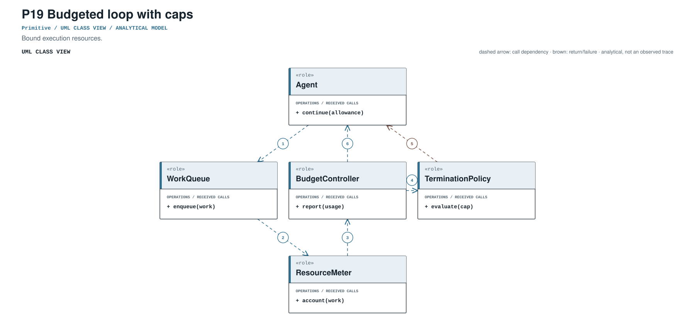
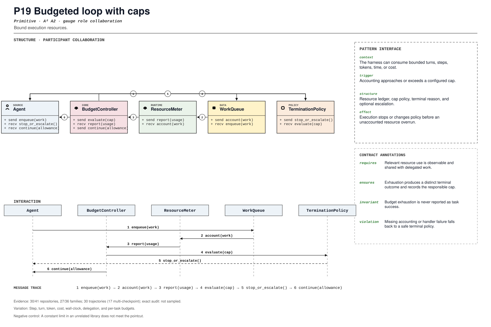

PROMPT SKETCH
Account for every bounded resource at the point of use, including delegated work. When a cap is exhausted, return a distinct terminal outcome that names the responsible budget.Bound execution resources.
resource_accounting_cycleRECORD STATUSCandidate · v0.1.0The proposed contract drawn as participant roles, received calls, and numbered dependencies.

The same roles and calls as a class collaboration and a numbered message sequence.

Where the mechanism applies. All four dimensions belong to the proposed match, not just its vocabulary.
The obligation that clients, operators, and auditors should be able to rely on.
A constant limit in an unrelated library does not meet the pointcut.
The hot spot is admitted only where the protected semantics survive.
Step, turn, token, cost, wall-clock, delegation, and per-task budgets.
Test exact cap, overshoot, parallel accounting, child work, and custom handler.
Did simple counters evolve into typed exhaustion and recovery contracts?
An illustrative prompt and a small design sketch for the proposed contract. Names and APIs are invented; this is not a repository excerpt.
Account for every bounded resource at the point of use, including delegated work. When a cap is exhausted, return a distinct terminal outcome that names the responsible budget.def before_step(budget, step):
cost = budget.estimate(step)
if not budget.can_spend(cost):
raise BudgetExhausted(
resource=budget.exhausted_resource,
limit=budget.limit,
spent=budget.spent,
turn=step.turn,
)
budget.spend(cost)Illustrative design sketch. A generic timeout is not a budget record; the failed cap must be attributable. This example is a teaching aid, not implementation evidence or a conformance claim.
Up to five public files retrieved by the frozen cue and pinned to the audited commit. A match is a place to inspect, not a confirmed implementation.
packages/core/src/session/runner/max-steps.ts:1CANONICAL SOURCE02aaif-goose/goosecrates/goose-local-inference/src/llamacpp/inference_engine.rs:467RETRIEVAL CUE03bytedance/deer-flowbackend/app/channels/manager.py:577RETRIEVAL CUE04china-qijizhifeng/agentic-harness-engineeringevolve.py:4157RETRIEVAL CUE05cline/clinesdk/packages/core/src/extensions/context/compaction-shared.ts:391RETRIEVAL CUEEach layer answers a different question. Do not substitute retrieval for review.
A concrete source anchor is available for this proposed record. It is one exemplar, not evidence that all repositories—or every contract field—conform.
Review boundary: this candidate and its specification come from an AI-assisted study. Independent human validation remains open.
75.0% of repository families in the frozen panel have at least one current cue, historical cue, or canonical source layer. This is not confirmed prevalence.
Current lexical-cue repositories: 23 / 41885df74024b6packages/core/src/session/runner/max-steps.ts:1packages/core/test/session-runner.test.ts:1Maximum-step terminal policy.
(?i)\b(?:max_(?:turns|steps|iterations)|step[_-]?limit|budget[_-]?(?:policy|limit)|token[_-]?budget)\bThis expression is a discovery instrument only. A match is a retrieval cue—not a confirmed implementation, pointcut match, or contract proof.